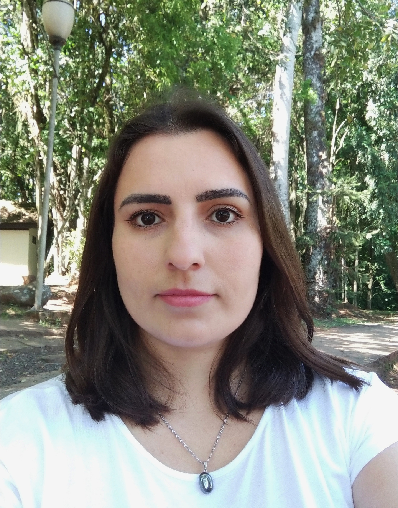

Sobre
Habilidades


Queite Schneider Castiglioni
Estudande de desenvolvimento Web na Trybe.
Ítalo-brasileira atualmente residente em São Leopoldo/RS. Bacharel em administração.
Movida por conhecimento.
Habilidades
- Resiliência
- Reflexão
- Capacidade analítica
- Pensamento criativo
- HTML
- Git e GitHub
- Orientação a dados e fatos
Organização
- Italiano
- Inglês